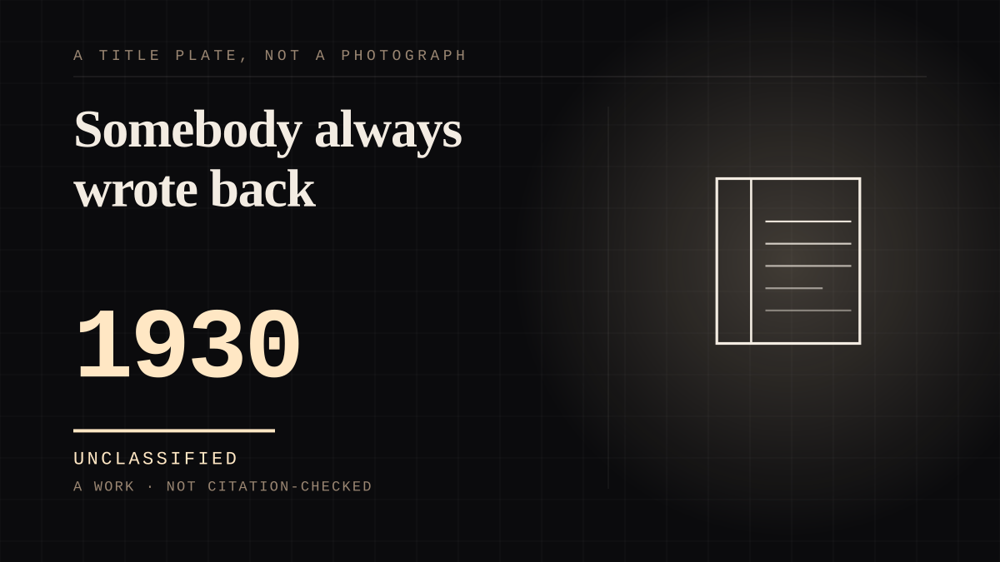

A work · 1930–1984 · The long war
Somebody always wrote back
Fifty-four years of letters to a fictional detective, answered by an office that had chosen not to have a face.

The archive is the evidence here, not a metaphor. The New York Public Library's Stratemeyer Syndicate records hold the fan mail as a described subseries - boxes 56 and 57 - of "letters received from young readers of Syndicate books dating from 1930-1984", together with "a few letters written by parents on behalf of their children, and from adults who read Syndicate volumes during their childhood". Fifty-four years, addressed to a girl who did not exist. The finding aid's own summary is that "dozens of fan letters from young readers testify to the broad appeal of Syndicate publications". This is what an archive looks like when somebody simply keeps the letters of a tie that asked for nothing - which is why it is the only evidence such a tie ever produces.
And there are recordings.
The same collection "includes commercial recordings of dramatic readings of Syndicate books, including stories from The Bobbsey Twins, Nancy Drew and Tom Swift. Also present are audio letters to Edna Stratemeyer Squier, and unidentified recordings." A child could send a voice and receive a voice in an era with no answering machine, and the reply was a physical object that has since been played to death. The honest limit is on the entry: the finding aid does not record who those letters were addressed to, so this entry does not claim they were answers to children. It claims that the company held audio letters and dramatic readings of Nancy Drew, which is what the document says.
For the first forty-four years of that correspondence the readers were writing to somebody with no author. The first Nancy Drew book appeared in April 1930 and Edward Stratemeyer died twelve days later. Mildred Wirt Benson wrote 23 of the first 30 books under the Syndicate-chosen house pseudonym Carolyn Keene, and that pseudonym was not a person - it was a slot in a production system, reused across series by writers who never met. Benson's identity was not made public until 1991, when staff and faculty at the University of Iowa established who Carolyn Keene had been. So for almost the whole life of the fan-mail subseries, every reply to a child's letter came from an office that had chosen not to have a face. The one detail on record about the series' quality comes from the same correspondence and is a marketing judgement: Stratemeyer thought Nancy Drew was "much too flip", and sent the manuscripts on anyway.
The near side's own account was collected, which almost never happens.
The Carolyn Dyer papers at the Iowa Women's Archives hold materials from a 1993 Nancy Drew Conference including "testimonials from readers all over the country on what Nancy Drew meant to them", and Rediscovering Nancy Drew (University of Iowa Press, 1995) grew out of that meeting with a chapter titled "Reading the Stories of Reading: Nancy Drew Testimonials". This site is an argument assembled from reader testimony, and here a hundred strangers wrote theirs down before anyone asked.
The register claim, and the motive it has to live with.
From the reader's side nothing was asked of the far end and nothing was paid, which is the undemanded test exactly - but the tie was industrial rather than unremarked. It had a business owner, a correspondence department, a house pseudonym and a schedule. So this is not the private case the register imagines; it is somebody noticing that children were writing and building the reply channel to meet them, which is the same decisive commercial move as a cereal company's decoder ring and considerably less cynical. What earns it the register is not that nobody profited - the Syndicate profited - but that the tie as the reader lived it asked for nothing and was answered anyway. Wanting is the only part of a one-sided tie that is never anybody's fault, and it is wanting that fifty-four years of letters is made of.
Where it sits
1900 1900-1949 · 1930 1949
Provenance · 4 source record(s)
- retrievableThe primary archival description, and the source of the entry's central claim. The Fan Mail subseries at boxes 56-57: "letters received from young readers of Syndicate books dating from 1930-1984. Also included are a few letters written by parents on behalf of their children, and from adults who read Syndicate volumes during their childhood." Also: "Dozens of fan letters from young readers testify to the broad appeal of Syndicate publications"; that the Syndicate "was established in 1905 by Edward Stratemeyer" as a book packaging company employing ghostwriters; that he "died in May of 1930, not long after the appearance of two of his most successful book series, The Hardy Boys and Nancy Drew"; that "commercial recordings of dramatic readings of Syndicate books, including stories from The Bobbsey Twins, Nancy Drew and Tom Swift" are in the collection along with "audio letters to Edna Stratemeyer Squier, and unidentified recordings"; and that Harriet Stratemeyer Adams revealed herself as the pseudonymous Carolyn Keene not long after Edna Squier's death in 1974. That last fact is recorded in RESEARCH-NOTES as NOT used for the authorship claim: Adams and Benson were different writers of the same pseudonym, and the 1991 Iowa finding is the one the entry relies on.New York Public Library, Stratemeyer Syndicate records, 1832-1984 (MssCol 2903) - finding aid ↗
- retrievableThe authorship, the count, the marketing objection and the launch date. That Stratemeyer "had concerns that Nancy Drew was 'much too flip'" and sent the manuscripts to Grosset & Dunlap regardless; that "by April 1930, the books were on store shelves"; that "Stratemeyer died twelve days after the release of the series"; and that Mildred Wirt Benson "wrote 23 of the first 30 books of the series under the Syndicate-chosen pseudonym Carolyn Keene", continuing "Through the 1930's and 1940's" under her own name, her own pseudonyms and Syndicate-owned collective pseudonyms, at royalties "sold along with any royalty rights to the Syndicate for a flat fee ranging from $85-$250" - the flat fee being the reason the byline could not carry a person.University of Iowa Libraries, Iowa Women's Archives - "The Tale of the Ghost Writer" ↗
- retrievableThe 1991 identification and the existence of a collected reader testimony. "In 1991, women staff and faculty at the University of Iowa discovered that the pseudonymous author of the original Nancy Drew books, Carolyn Keene, was none other than Mildred Wirt Benson, the first person to earn a master's degree in journalism at Iowa." The contents include Part I "Creating and Publishing Nancy Drew", Part III "Collecting and Studying Nancy Drew", and chapter 10, "'Reading' the Stories of Reading: Nancy Drew Testimonials" - which is the source of the claim that the readers' own accounts were gathered rather than inferred. Table of contents only; the full text is restricted access, so the entry does not quote from it.Carolyn Stewart Dyer and Nancy Tillman Romalov (eds), Rediscovering Nancy Drew, University of Iowa Press, 1995 - Project MUSE record ↗
- retrievableCorroboration of the shape of the enterprise: an American book packaging company producing a number of book series for children including Nancy Drew, the Hardy Boys and Tom Swift. Read for structure only - the finding aid above is the authority for every specific claim, and no claim on this entry rests on Wikipedia alone.Wikipedia, Stratemeyer Syndicate ↗
CHARACTER The written character
Connected · 2 out, 2 in
It sits in
The full timeline → · The database → · See it in the atlas →